Code
# Load the library "rstanarm" to fit Bayesian linear models using the function
# stan_glm()
library(rstanarm) Load R-libraries
# Load the library "rstanarm" to fit Bayesian linear models using the function
# stan_glm()
library(rstanarm) Readings:
Gelman et al. (2021), Chapter 13 covers logistic regression.
Before we go into the details of logistic regression, we need to clarify the meaning of common measures of binary outcomes and contrasts, specifically:
Relationship probability (“risk”) and odds:
| Group | Disease | No disease | row sum |
|---|---|---|---|
| 1 | a | b | a+b |
| 0 | c | d | c+d |
Note: With low prevalence of disease (low risk), \(a\) is much smaller than \(b\), and \(c\) is much smaller than \(d\), and OR is similar to RR.
\(RR = \frac{a/(a+b)}{c/(c+d)} \approx \frac{a/b}{c/d} = OR\), if \(a \ll b, c \ll d\)
For large \(a\) and \(c\), \(OR > RR\)
Randomized controlled trial: Effect of aspirin on the incidence of heart attacks.
| Group | Heart attack | No heart attack | |
|---|---|---|---|
| Aspirin | 104 | 10,933 | 11,037 |
| Placebo | 189 | 10,845 | 11,034 |
| 293 | 21,778 | 22,071 |
Logistic regression is used for binary outcome variables, typically coded 0 or 1, such as alive/dead, healthy/sick, successful/unsuccessful, correct/incorrect, etc.
Remember the general form of of the linear model:
\(y_i \sim Normal(\mu_i, \sigma)\)
\(\mu_i = b_0 + b_1x_i\)
Logistic regression can be defined similarly:
\(y_i \sim Bernoulli(p_i)\)
\(p_i = logit^{-1}(b_0 + b_1x_i)\)
Or equivalent (and more common):
\(y_i \sim Bernoulli(p_i)\)
\(logit(p_i) = b_0 + b_1x_i\)
Note that \(Bernoulli(p)\) is a special cases of the binomial distribution \(Binomial(n, p)\) with \(n = 1\).
The estimated parameter \(p_i\) is the probability (“risk”) of y = 1 given specific value(s) of the predictor(s) x. The probability \(p_i\) is also the mean, as the mean of an indicator variable y is the probability of y = 1. Thus, both the linear and the logistic model predicts the mean value of the outcome variable given a specific value of the predictor. A difference is that the estimated parameter \(\mu_i\) in the linear model is also a possible value of a single observation, whereas the estimated parameter \(p_i\) in logistic regression is a value that is never seen in a single observation, as these only can take on values of 0 or 1.
The logistic model involve a linear model. In theory, a line has no boundaries and can go from \(-\infty\) to \(\infty\), whereas a probability (or risk or proportion or prevalence) can only take values between 0 and 1. The way logistic regression deals with this is to make a linear model not of the probability, but of the unbounded log-odds:
The function that transforms \(p\) to log-odds is called
The linear model is nested in the inverse logit, \(logit^{-1}\), that restricts the output of \(p\) to the interval [0, 1]:
As seen in the left-hand figure below, when the output of the linear model (\(b_0 + b_1x_i\)) goes below -4 or above +4, the predicted probability (the output of the inverse-logit) is close to zero and one, respectively. When the linear model is zero, the probability is 0.5.
inverse-logit() and logit():
plogis().qlogis()par(mfrow = c(1, 2))
# Plot of logistic() = inv_logit()
x <- seq(-5, 5, by = 0.1)
p <- plogis(x)
plot(x, p, type = "l", xlab = "Linear model: b0 + b1x",
ylab = " p = inverse-logit(b0 + b1x)")
abline(0,0, col = "grey")
abline(1,0, col = "grey")
mtext(side = 3, text = "inverse-logit()", cex = 0.9)
# Plot of logit()
q <- qlogis(p)
plot(p, x, type = "l", xlab = "p",
ylab = "logit(p) = b0 + b1x")
mtext(side = 3, text = "logit()", cex = 0.9)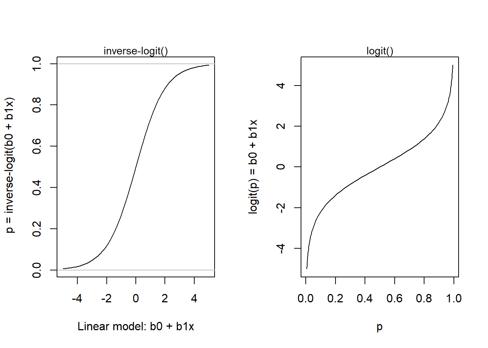
Here is an example from Gelman et al. (2021) (fig 13.1b. p, 218) for a simple model with one predictor:
\(y_i \sim Bernoulli(p_i)\)
\(p_i = logit^{-1}(-1.4 + 0.33x_i)\)
x <- seq(-20, 20, by = 0.1)
b0 <- -1.4
b1 <- 0.33
par(mfrow = c(1, 2))
plot(x, b0 + b1*x, type = 'l', ylab = "log-odds = -1.4 + 0.33x")
mtext(side = 3, text = "Linear model", cex = 0.9)
y <- (exp(b0 + b1*x) / (1 + exp(b0 + b1*x)))
plot(x, y, ylab = "p = inv-logit(-1.4 + 0.33x)", type = 'l', xlab = "x")
abline(0,0, col = "grey")
abline(1,0, col = "grey")
mtext(side = 3, text = "inv-logit(Linear model)", cex = 0.9)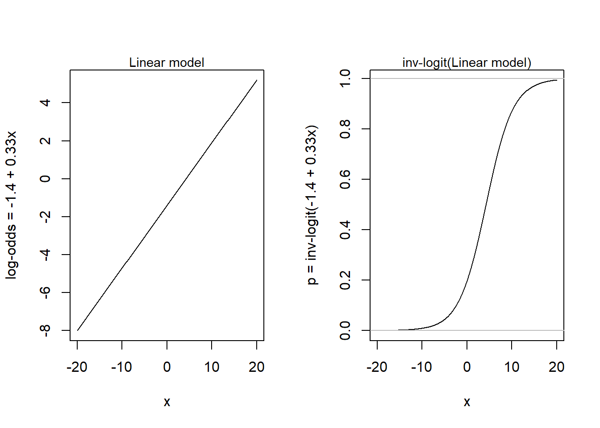
In their example, the function predicted the probability of supporting George Bush in the 1992 presidential election, as a function of income level from 1 to 5 (see their figure 13.2). But here I will assume another story, to justify looking at the function in its full range. So, let’s assume that y is a binary outcome variable indicating success (1) or failure (0) in solving a not too-easy mathematical problem, and x is a mean-centered variable representing the amount of mathematical training of the problem solver (-20 is the amount of training of a 7-year old school kid, +20 of a Ph.D. in mathematics, and 0 is the mean amount of training in the population).
Let’s simulate data, using rbinom(), plot data and fit data to a logistic model using glm() (please try rstanarm::stan_glm()). ``
# Simulate data
set.seed(123)
x <- rep(seq(-20, 20), 100) # Exposure
pp <- plogis(-1.4 + 0.33*x) # Probability of outcome = 1
y <- rbinom(length(x), 1, prob = pp) # Data: 0 or 1
# Plot, with transparent colors
jitter <- rnorm(length(x), 0, 0.02)
plot(x + jitter, y, xlim = c(-20, 20), ylim = c(0, 1), pch = 20,
col = rgb(0, 0, 1, 0.02), cex = 2, xlab = "x", ylab = "P(y = 1)")
# Model using glm()
m <- glm(y ~ x, family = binomial(link = "logit"))
xline <- seq(-20, 20, by = 0.1)
yline <- plogis(m$coefficients[1] + m$coefficients[2]*xline)
lines(xline, yline, col = "darkred", lwd = 2)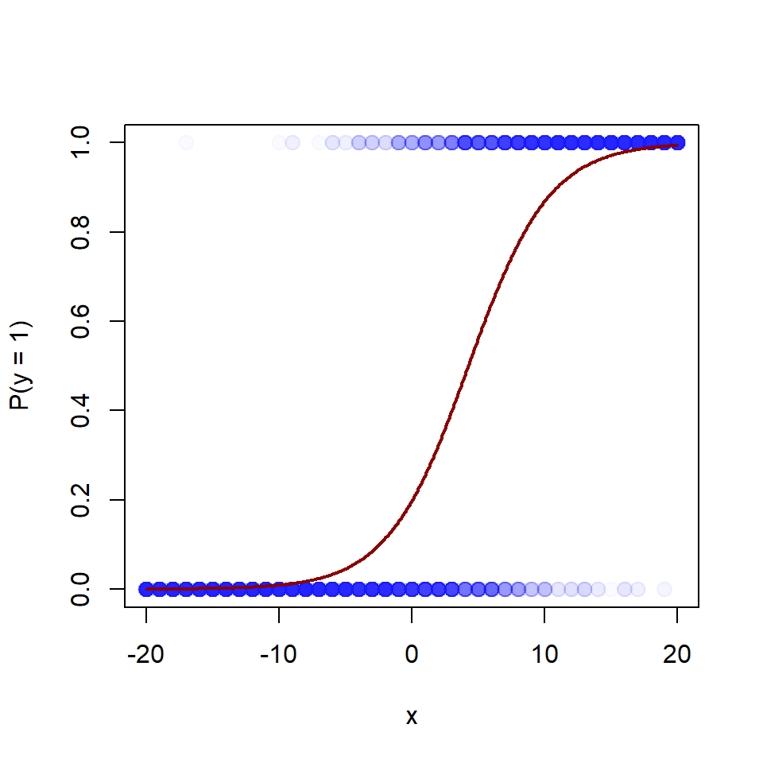
round(coef(m), 2)(Intercept) x
-1.40 0.33 round(confint(m), 2) 2.5 % 97.5 %
(Intercept) -1.54 -1.26
x 0.31 0.35Interpretations of intercept, \(b_0 = -1.4\)
Interpretations of slope, \(b_1 = 0.33\)
b0 <- -1.4
b1 <- 0.33
x0 <- seq(-20, 20, by = 0.1)
y0 <- (exp(b0 + b1*x0) / (1 + exp(b0 + b1*x0)))
x1 <- x0 + 1
y1 <- (exp(b0 + b1*x1) / (1 + exp(b0 + b1*x1)))
rd <- y1 - y0
rr <- y1/y0
or <- (y1/(1-y1)) / (y0/(1-y0))
par(mfrow = c(1, 2))
# Data and logistic function
jitter <- rnorm(length(x), 0, 0.02)
plot(x + jitter, y, xlim = c(-20, 20), ylim = c(0, 1), pch = 20,
col = rgb(0, 0, 1, 0.02), cex = 1, xlab = "x", ylab = "Pr(y = 1|x)")
lines(x0, y0, col = "darkred")
# Effect measures: RD, RR, OR
plot(c(-20, 20), c(0, 2), pch = "", xlab = "x",
ylab = "Effect size per unit change in x")
lines(x0, rd, col = "blue", lty = 2)
lines(x0, rr, col = "red", lty = 3)
lines(x0, or, col = "darkgreen", lty = 4)
# Add text to fig
text(x = -20, y = 0.1, labels = "Risk difference",
pos = 4, cex = 0.7, col = "blue")
text(x = 8, y = 0.95, labels = "Relative risk",
pos = 4, cex = 0.7, col = "red")
text(x = 8, y = 1.45, labels = "Odds ratio",
pos = 4, cex = 0.7, col = "darkgreen")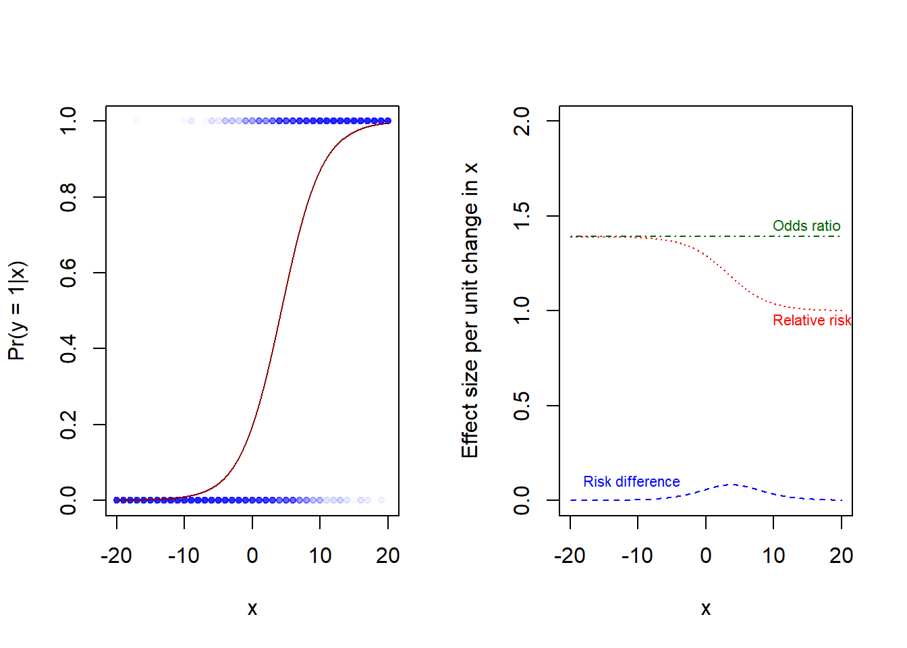
As we noted earlier for linear regression (Notes 10): Estimating the mean is the same as regressing on a constant.
\(y_i \sim Normal(\mu, \sigma)\)
\(\mu = b_0\),
where \(b_0\) is the estimate of the population mean.
The same holds for logistic regression, where the mean is the probability of y = 1.
\(y_i \sim Bernoulli(p)\)
\(p = logit^{-1}(b_0)\),
where \(b_0\) is the log-odds, and \(p = logit^{-1}(b_0) = \frac{exp(b_0)}{1 + exp(b_0)}\)
In the Aspirin experiment, the overall (marginal) proportion of heart attacks was 293 in 22,070 (so the sample proportion equals 0.013). We could use logistic regression to estimate the population proportion with a compatibility interval.
# Data from aspirin experiment
mi <- c(rep(1, 104), rep(0, 10933), rep(1, 189), rep(0, 10845))
aspirin <- c(rep(1, 104), rep(1, 10933), rep(0, 189), rep(0, 10845))
a <- data.frame(aspirin, mi)
# Fit intercpt-only model, display coefficients (log-odds)
asp0 <- glm(mi ~ 1, family = binomial(link ="logit"), data = a)
coef(asp0)(Intercept)
-4.308483 confint(asp0)Waiting for profiling to be done... 2.5 % 97.5 %
-4.425954 -4.195331 # Display as probabilities, using the inverse-logit, in R called plogis()
plogis(coef(asp0))(Intercept)
0.01327534 plogis(confint(asp0))Waiting for profiling to be done... 2.5 % 97.5 %
0.01182137 0.01484215 And as we noted earlier for linear regression (Notes 10): Estimating a difference between two means is the same as regressing on an indicator variable:
\(y_i ~ Normal(\mu_i, \sigma)\)
\(\mu_i = b_0 + b_iD_i\),
where \(D_i\) is an indicator variable coded 0 for one group and 1 for the other. Thus, \(b_0\) is the estimate of the population mean for group 0, and \(b_1\) is an estimate of the difference between population group means.
Similarly for logistic regression:
\(y_i ~ Bernouilli(p_i)\)
\(p_i = logit^{-1}(b_0 + b_iD_i)\).
Here \(b_0\) is the log-odds of group 0, and \(b_i\) is the difference in log-odds between the two groups. Note that \(exp(b_1)\) is the odds ratio of group 1 versus group 0. We may also convert to probabilities:
Here I create a data frame with as many rows as participants in the Aspirin experiment (see Table above), and then I use logistic regression to fit the model (MI for myocardial infarction, coded 0 or 1)
\(MI_i \sim Bernouilli(p_i)\)
\(p_i = logit^{-1}(b_0 + b_1Aspirin_i)\)
# Data from aspirin experiment
mi <- c(rep(1, 104), rep(0, 10933), rep(1, 189), rep(0, 10845))
aspirin <- c(rep(1, 104), rep(1, 10933), rep(0, 189), rep(0, 10845))
a <- data.frame(aspirin, mi)
table(aspirin = a$aspirin, mi = a$mi) mi
aspirin 0 1
0 10845 189
1 10933 104# Logistic regression
aspfit <- glm(mi ~ aspirin, family = binomial(link ="logit"), data = a)
summary(aspfit)
Call:
glm(formula = mi ~ aspirin, family = binomial(link = "logit"),
data = a)
Coefficients:
Estimate Std. Error z value Pr(>|z|)
(Intercept) -4.04971 0.07337 -55.195 < 2e-16 ***
aspirin -0.60544 0.12284 -4.929 8.28e-07 ***
---
Signif. codes: 0 '***' 0.001 '**' 0.01 '*' 0.05 '.' 0.1 ' ' 1
(Dispersion parameter for binomial family taken to be 1)
Null deviance: 3114.7 on 22070 degrees of freedom
Residual deviance: 3089.3 on 22069 degrees of freedom
AIC: 3093.3
Number of Fisher Scoring iterations: 7Converting \(b_0\) to risk for placebo group, \(b_1\) to odds ratio: aspirin/placebo, and \(b_0 + b_1\) to risk of aspirin group.
# Coefficients
b0 <- aspfit$coefficients[1]
b1 <- aspfit$coefficients[2]
# Transform using plogis() and exp()
asp_estimates <- c(plogis(b0), plogis(b0+b1), exp(b1))
names(asp_estimates) <- c("risk-placebo", "risk-aspirin", "odds ratio")
round(asp_estimates, 4)risk-placebo risk-aspirin odds ratio
0.0171 0.0094 0.5458 Here example from Gelman et al. (2021) from arsenic level in wells in Bangladesh and users decisions to switch to less polluted wells, for details, see p. 234-237.
Follow this link to find data Save (Ctrl+S on a PC) to download as text file
Code book:
Measurements of wells and households, and follow registration of well-switching behavior at follow up a few years later.
Import data
# Import data
wells <- read.table("datasets/wells.txt", header = TRUE, sep = ",")
str(wells)'data.frame': 3020 obs. of 7 variables:
$ switch : int 1 1 0 1 1 1 1 1 1 1 ...
$ arsenic: num 2.36 0.71 2.07 1.15 1.1 3.9 2.97 3.24 3.28 2.52 ...
$ dist : num 16.8 47.3 21 21.5 40.9 ...
$ dist100: num 0.168 0.473 0.21 0.215 0.409 ...
$ assoc : int 0 0 0 0 1 1 1 0 1 1 ...
$ educ : int 0 0 10 12 14 9 4 10 0 0 ...
$ educ4 : num 0 0 2.5 3 3.5 2.25 1 2.5 0 0 ...Summary
summary(wells, digits = 2) switch arsenic dist dist100 assoc
Min. :0.00 Min. :0.51 Min. : 0.39 Min. :0.0039 Min. :0.00
1st Qu.:0.00 1st Qu.:0.82 1st Qu.: 21.12 1st Qu.:0.2112 1st Qu.:0.00
Median :1.00 Median :1.30 Median : 36.76 Median :0.3676 Median :0.00
Mean :0.58 Mean :1.66 Mean : 48.33 Mean :0.4833 Mean :0.42
3rd Qu.:1.00 3rd Qu.:2.20 3rd Qu.: 64.04 3rd Qu.:0.6404 3rd Qu.:1.00
Max. :1.00 Max. :9.65 Max. :339.53 Max. :3.3953 Max. :1.00
educ educ4
Min. : 0.0 Min. :0.0
1st Qu.: 0.0 1st Qu.:0.0
Median : 5.0 Median :1.2
Mean : 4.8 Mean :1.2
3rd Qu.: 8.0 3rd Qu.:2.0
Max. :17.0 Max. :4.2 Model with only distance as predictor
fit_1 <- stan_glm(switch ~ dist100, family = binomial(link = "logit"),
data = wells, refresh = 0)
print(fit_1, digits = 1)stan_glm
family: binomial [logit]
formula: switch ~ dist100
observations: 3020
predictors: 2
------
Median MAD_SD
(Intercept) 0.6 0.1
dist100 -0.6 0.1
------
* For help interpreting the printed output see ?print.stanreg
* For info on the priors used see ?prior_summary.stanregVisualize data and model prediction.
# function to jitter data points
jitter_binary <- function(a, jitt = 0.05){
ifelse(a == 0, runif(length(a), 0, jitt), runif(length(a), 1- jitt, 1))
}
wells$switch_jitter <- jitter_binary(wells$switch)
# Plot jittered data
plot(wells$dist100, wells$switch_jitter, pch = 16, col = rgb(0, 0, 1, 0.1),
xlab = "Distance (in 100-m) to nearest safe well",
ylab = "Pr(switching | distance)")
cf <- coef(fit_1)
x <- seq(from = 0, to = 4, by = 0.1)
ypred <- plogis(cf[1] + cf[2]*x)
lines(x, ypred)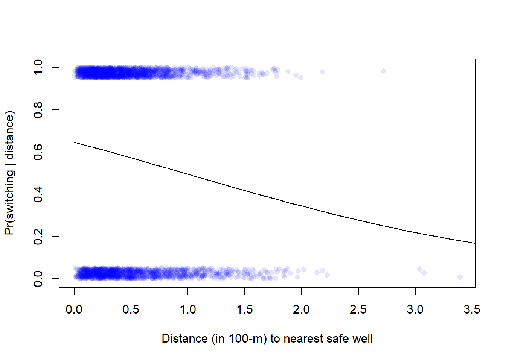
Model with distance and arsenic level as predictor
This is Gelman Fig. 13.10a
# Fit model (Gelman et al. calls it fit_3)
fit_3 <- stan_glm(switch ~ dist100 + arsenic, family = binomial(link = "logit"),
data = wells, refresh = 0)
print(fit_3, digits = 2)stan_glm
family: binomial [logit]
formula: switch ~ dist100 + arsenic
observations: 3020
predictors: 3
------
Median MAD_SD
(Intercept) 0.00 0.08
dist100 -0.90 0.10
arsenic 0.46 0.04
------
* For help interpreting the printed output see ?print.stanreg
* For info on the priors used see ?prior_summary.stanreg# Plot data, see Fig. 13.10 (left) in Gelman et al.
plot(wells$dist100, wells$switch_jitter, pch = 16, col = rgb(0, 0, 1, 0.1),
xlab = "Distance (in 100-m) to nearest safe well",
ylab = "Pr(switching | distance)")
# Model predictions, in data-frame called xx
cf <- coef(fit_3)
x <- seq(from = 0, to = 4, by = 0.1)
arsenic <- c(0.5, 1)
xx <- expand.grid(dist100 = x, arsenic = arsenic)
xx$ypred <- plogis(cf[1] + cf[2]*xx$dist100 + cf[3]*xx$arsenic)
head(xx) dist100 arsenic ypred
1 0.0 0.5 0.5582066
2 0.1 0.5 0.5359890
3 0.2 0.5 0.5136276
4 0.3 0.5 0.4912115
5 0.4 0.5 0.4688307
6 0.5 0.5 0.4465747# Add lines for model prediction with two levels of arsenic (low = 0.5, high = 1)
lines(xx$dist100[xx$arsenic == 0.5], xx$ypred[xx$arsenic == 0.5], lty = 2)
lines(xx$dist100[xx$arsenic == 1], xx$ypred[xx$arsenic == 1], lty = 1)
# Add text to plot
text(x = 0.5, y = 0.53, labels = "If As = 1", pos = 4, cex = 0.8)
text(x = 0.3, y = 0.37, labels = "If As = 0.5", pos = 4, cex = 0.8)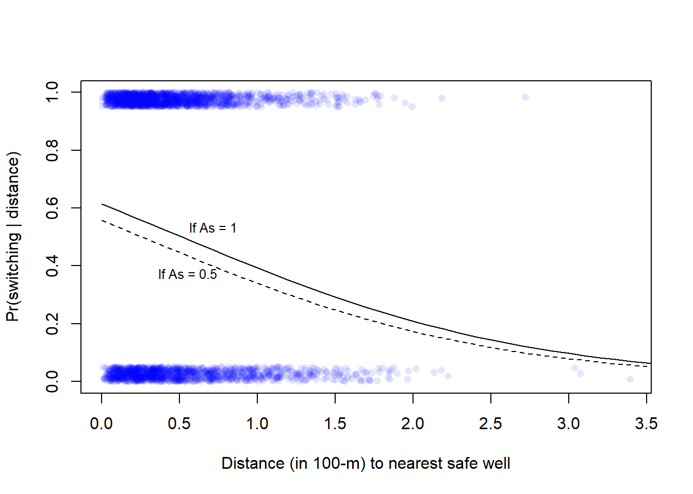
Here with lines for arsenic-level corresponding to the 5, 50, and 95th percentile, respectively. I show it on the log-odds scale (left) and on the the probability scale (as Gelman et al).
par(mfrow = c(1, 2))
## Plot, with outcome on log-odds scale ----
plot(NULL, pch = 16, col = rgb(0, 0, 1, 0.1),
xlab = "Distance (in 100-m) to nearest safe well",
ylab = "log-odds (Pr(switching | distance))",
xlim = c(0, 4), ylim = c(-6, 6))
# Model predictions, in data-frame called xx
cf <- coef(fit_3)
x <- seq(from = 0, to = 4, by = 0.1)
arsenic <- quantile(wells$arsenic, c(0.05, 0.5, 0.95))
xx <- expand.grid(dist100 = x, arsenic = arsenic)
xx$ypred <-cf[1] + cf[2]*xx$dist100 + cf[3]*xx$arsenic
head(xx) dist100 arsenic ypred
1 0.0 0.56 0.261520296
2 0.1 0.56 0.171838913
3 0.2 0.56 0.082157530
4 0.3 0.56 -0.007523853
5 0.4 0.56 -0.097205236
6 0.5 0.56 -0.186886619# Add lines for model prediction with three levels of arsenic (5, 50, 95th)
lines(xx$dist100[xx$arsenic == arsenic[1]], xx$ypred[xx$arsenic == arsenic[1]], lty = 1)
lines(xx$dist100[xx$arsenic == arsenic[2]], xx$ypred[xx$arsenic == arsenic[2]], lty = 2)
lines(xx$dist100[xx$arsenic == arsenic[3]], xx$ypred[xx$arsenic == arsenic[3]], lty = 3)
# Add text to plot
text(x = 0.5, y = -1.7, labels = paste("As:", round(arsenic[1], 2)), pos = 4, cex = 0.8)
text(x = 0.5, y = 0.35, labels = paste("As:", round(arsenic[2], 2)), pos = 4, cex = 0.8)
text(x = 0.3, y = 1.8, labels = paste("As:", round(arsenic[3], 2)), pos = 4, cex = 0.8)
## Plot data, probability scale see Fig. 13.10 (left) in Gelman et al. ----
plot(wells$dist100, wells$switch_jitter, pch = 16, col = rgb(0, 0, 1, 0.1),
xlab = "Distance (in 100-m) to nearest safe well",
ylab = "Pr(switching | distance)")
# Model predictions, in data-frame called xx
cf <- coef(fit_3)
x <- seq(from = 0, to = 4, by = 0.1)
arsenic <- quantile(wells$arsenic, c(0.05, 0.5, 0.95))
xx <- expand.grid(dist100 = x, arsenic = arsenic)
xx$ypred <- plogis(cf[1] + cf[2]*xx$dist100 + cf[3]*xx$arsenic)
head(xx) dist100 arsenic ypred
1 0.0 0.56 0.5650100
2 0.1 0.56 0.5428543
3 0.2 0.56 0.5205278
4 0.3 0.56 0.4981190
5 0.4 0.56 0.4757178
6 0.5 0.56 0.4534139# Add lines for model prediction with three levels of arsenic (5, 50, 95th)
lines(xx$dist100[xx$arsenic == arsenic[1]], xx$ypred[xx$arsenic == arsenic[1]], lty = 1)
lines(xx$dist100[xx$arsenic == arsenic[2]], xx$ypred[xx$arsenic == arsenic[2]], lty = 2)
lines(xx$dist100[xx$arsenic == arsenic[3]], xx$ypred[xx$arsenic == arsenic[3]], lty = 3)
# Add text to plot
text(x = 0.5, y = 0.25, labels = paste("As:", round(arsenic[1], 2)), pos = 4, cex = 0.8)
text(x = 0.5, y = 0.55, labels = paste("As:", round(arsenic[2], 2)), pos = 4, cex = 0.8)
text(x = 0.3, y = 0.85, labels = paste("As:", round(arsenic[3], 2)), pos = 4, cex = 0.8)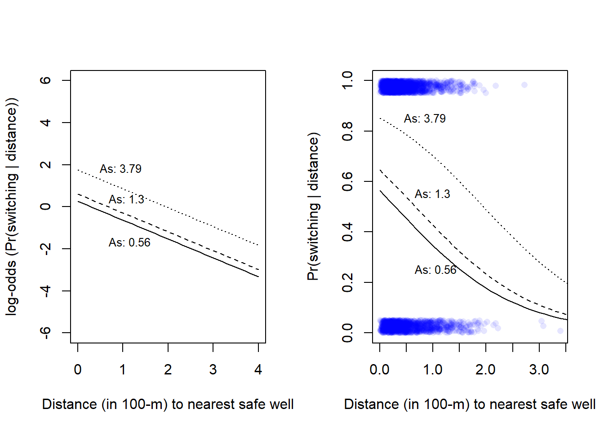
# print arsenic levels displayed
round(c(As = arsenic), 2) As.5% As.50% As.95%
0.56 1.30 3.79 Here with lines for distances corresponding to the 5, 50, and 95th percentile, respectively (cf. Gelman et al., Fig 13.10b).
# Probability scale, see Fig. 13.10 (left) in Gelman et al.
# Plot data,
plot(wells$arsenic, wells$switch_jitter, pch = 16, col = rgb(0, 0, 1, 0.1),
xlab = "Arsenic concentration in well water",
ylab = "Pr(switching | distance)", xlim = c(0, 8))
# Model predictions, in data-frame called xx
cf <- coef(fit_3)
x <- seq(from = 0.5, to = 8, by = 0.1) # arsenic levels from 0 to 6
dist100 <- quantile(wells$dist100, c(0.05, 0.5, 0.95))
xx <- expand.grid(arsenic = x, dist100 = dist100)
xx$ypred <- plogis(cf[1] + cf[2]*xx$dist100 + cf[3]*xx$arsenic)
head(xx) arsenic dist100 ypred
1 0.5 0.0798645 0.5404770
2 0.6 0.0798645 0.5518923
3 0.7 0.0798645 0.5632531
4 0.8 0.0798645 0.5745479
5 0.9 0.0798645 0.5857655
6 1.0 0.0798645 0.5968948# Add lines for model prediction with three levels of dist100 (5, 50, 95th)
lines(xx$arsenic[xx$dist100 == dist100[1]], xx$ypred[xx$dist100 == dist100[1]], lty = 1)
lines(xx$arsenic[xx$dist100 == dist100[2]], xx$ypred[xx$dist100 == dist100[2]], lty = 2)
lines(xx$arsenic[xx$dist100 == dist100[3]], xx$ypred[xx$dist100 == dist100[3]], lty = 3)
# Add text to plot
text(x = 0.5, y = 0.28, labels = paste("Dist:", round(100*arsenic[1]), "m"),
pos = 4, cex = 0.8)
text(x = 0.5, y = 0.47, labels = paste("Dist:", round(100*arsenic[2]), "m"),
pos = 4, cex = 0.8)
text(x = 0.3, y = 0.65, labels = paste("Dist:", round(100*arsenic[3]), "m"),
pos = 4, cex = 0.79)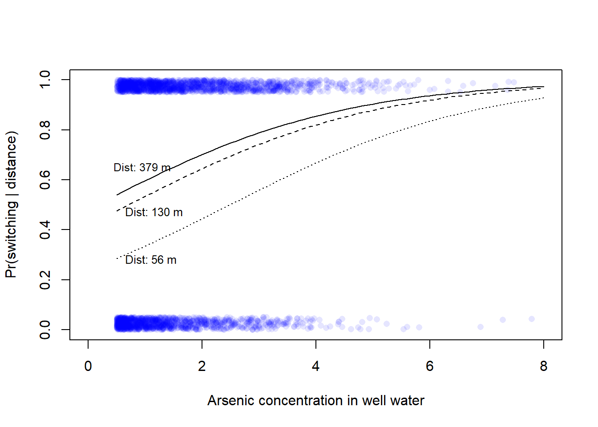
Add interaction term to the model. Below with no centering.
# Fit model (Gelman et al. calls it fit_4)
fit_4 <- stan_glm(switch ~ dist100 + arsenic + dist100:arsenic,
family = binomial(link = "logit"),
data = wells, refresh = 0)
print(fit_4, digits = 2)stan_glm
family: binomial [logit]
formula: switch ~ dist100 + arsenic + dist100:arsenic
observations: 3020
predictors: 4
------
Median MAD_SD
(Intercept) -0.15 0.12
dist100 -0.57 0.22
arsenic 0.56 0.07
dist100:arsenic -0.18 0.11
------
* For help interpreting the printed output see ?print.stanreg
* For info on the priors used see ?prior_summary.stanregTo help interpretation of coefficients, here the same model with centered predictors
# Centering
wells$c_dist100 <- wells$dist100 - mean(wells$dist100)
wells$c_arsenic <- wells$arsenic - mean(wells$arsenic)
# Model (Gelman et al. calls it fit_5, p. 244)
fit_5 <- stan_glm(switch ~ c_dist100 + c_arsenic + c_dist100:c_arsenic,
family = binomial(link = "logit"),
data = wells, refresh = 0)
print(fit_5, digits = 2)stan_glm
family: binomial [logit]
formula: switch ~ c_dist100 + c_arsenic + c_dist100:c_arsenic
observations: 3020
predictors: 4
------
Median MAD_SD
(Intercept) 0.35 0.04
c_dist100 -0.88 0.11
c_arsenic 0.47 0.04
c_dist100:c_arsenic -0.18 0.10
------
* For help interpreting the printed output see ?print.stanreg
* For info on the priors used see ?prior_summary.stanregpred5 <- fitted(fit_5) # Fitted value
res5 <- wells$switch - pred5 # ResidualInterpretation of the coefficients:
c_dist100 = 0 and c_arsenic = 0). Use \(logit^{-1}(Intercept)\) to express in probability units, in R you may use plogis(). In the model above, the intercept is 0.35, so the models estimate of the probability of switching if distance and arsenic is at their mean is plogis(0.35) or about 0.59.Plot the model (only way to really understand the interaction), left on the log-odds scale, right on the probability scale.
par(mfrow = c(1, 2))
## Plot, with outcome on log-odds scale ----
plot(NULL, pch = 16, col = rgb(0, 0, 1, 0.1),
xlab = "Mean-centered dist100",
ylab = "log-odds (Pr(switching | distance))",
xlim = c(-1, 3.5), ylim = c(-6, 6))
# Model predictions, in data-frame called xx
cf <- coef(fit_5)
x <- seq(from = -0.5, to = 3, by = 0.1)
arsenic <- quantile(wells$c_arsenic, c(0.05, 0.5, 0.95))
xx <- expand.grid(c_dist100 = x, c_arsenic = arsenic)
xx$dxa <- xx$c_dist100*xx$c_arsenic
xx$ypred <- cf[1] + cf[2]*xx$c_dist100 + cf[3]*xx$c_arsenic + cf[4]*xx$dxa
head(xx) c_dist100 c_arsenic dxa ypred
1 -0.5 -1.09693 0.5484652 0.17707787
2 -0.4 -1.09693 0.4387722 0.10901440
3 -0.3 -1.09693 0.3290791 0.04095093
4 -0.2 -1.09693 0.2193861 -0.02711253
5 -0.1 -1.09693 0.1096930 -0.09517600
6 0.0 -1.09693 0.0000000 -0.16323946# Add lines for model prediction with three levels of arsenic (5, 50, 95th)
lines(xx$c_dist100[xx$c_arsenic == arsenic[1]], xx$ypred[xx$c_arsenic == arsenic[1]], lty = 1)
lines(xx$c_dist100[xx$c_arsenic == arsenic[2]], xx$ypred[xx$c_arsenic == arsenic[2]], lty = 2)
lines(xx$c_dist100[xx$c_arsenic == arsenic[3]], xx$ypred[xx$c_arsenic == arsenic[3]], lty = 3)
# Add text to plot
#text(x = -1, y = 0, labels = paste("As:", round(arsenic[1], 2)), pos = 4, cex = 0.8)
#text(x = -1, y = 0.7, labels = paste("As:", round(arsenic[2], 2)), pos = 4, cex = 0.8)
#text(x = -1, y = 2.2, labels = paste("As:", round(arsenic[3], 2)), pos = 4, cex = 0.8)
## Plot data, probability scale see Fig. 13.10 (left) in Gelman et al. ----
plot(NULL, pch = 16, col = rgb(0, 0, 1, 0.1),
xlab = "Mean-centered dist100",
ylab = "Pr(switching | distance)",
xlim = c(-1, 3.5), ylim = c(0, 1))
# Model predictions, in data-frame called xx
cf <- coef(fit_5)
x <- seq(from = -0.5, to = 3, by = 0.1)
arsenic <- quantile(wells$c_arsenic, c(0.05, 0.5, 0.95))
xx <- expand.grid(c_dist100 = x, c_arsenic = arsenic)
xx$dxa <- xx$c_dist100*xx$c_arsenic
xx$ypred <- plogis(cf[1] + cf[2]*xx$c_dist100 + cf[3]*xx$c_arsenic + cf[4]*xx$dxa)
head(xx) c_dist100 c_arsenic dxa ypred
1 -0.5 -1.09693 0.5484652 0.5441541
2 -0.4 -1.09693 0.4387722 0.5272266
3 -0.3 -1.09693 0.3290791 0.5102363
4 -0.2 -1.09693 0.2193861 0.4932223
5 -0.1 -1.09693 0.1096930 0.4762239
6 0.0 -1.09693 0.0000000 0.4592805# Add lines for model prediction with three levels of arsenic (5, 50, 95th)
lines(xx$c_dist100[xx$c_arsenic == arsenic[1]], xx$ypred[xx$c_arsenic == arsenic[1]], lty = 1)
lines(xx$c_dist100[xx$c_arsenic == arsenic[2]], xx$ypred[xx$c_arsenic == arsenic[2]], lty = 2)
lines(xx$c_dist100[xx$c_arsenic == arsenic[3]], xx$ypred[xx$c_arsenic == arsenic[3]], lty = 3)
# Add text to plot
ma <- mean(wells$arsenic)
text(x = -1, y = 0.4, labels = paste("As:", round(arsenic[1] + ma, 2)), pos = 4, cex = 0.7)
text(x = -1, y = 0.7, labels = paste("As:", round(arsenic[2] + ma, 2)), pos = 4, cex = 0.7)
text(x = -1, y = 0.95, labels = paste("As:", round(arsenic[3] + ma, 2)), pos = 4, cex = 0.7)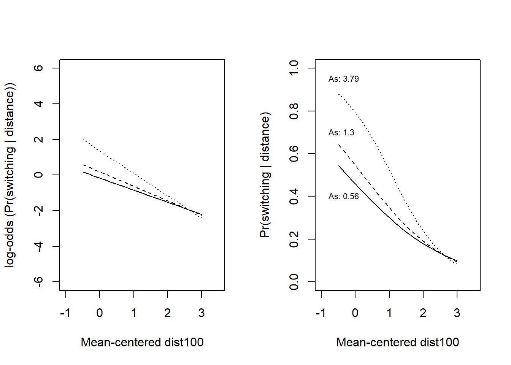
Note that the interaction term is negative, but that its size is uncertain. Below the posterior probability for the interaction, about 4 % above zero, so the 95 % compatibility interval includes zero.
s5 <- data.frame(fit_5)
colnames(s5) <- c("b0", "dist", "arsenic", "dxa")
plot(density(s5$dxa), main = "Posterior prob. interaction",
xlab = "c_dist100:c_arsenic")
abline(v = 0, col = "blue")
text(0.1, 0.7, labels = paste("P(x > 0) = ", round(mean(s5$dxa > 0), 3)),
cex = 0.8)
lines(quantile(s5$dxa, prob = c(0.025, 0.975)), c(0.1, 0.1), col = "blue")
points(median(s5$dxa), 0.1, pch = 21, bg = "blue")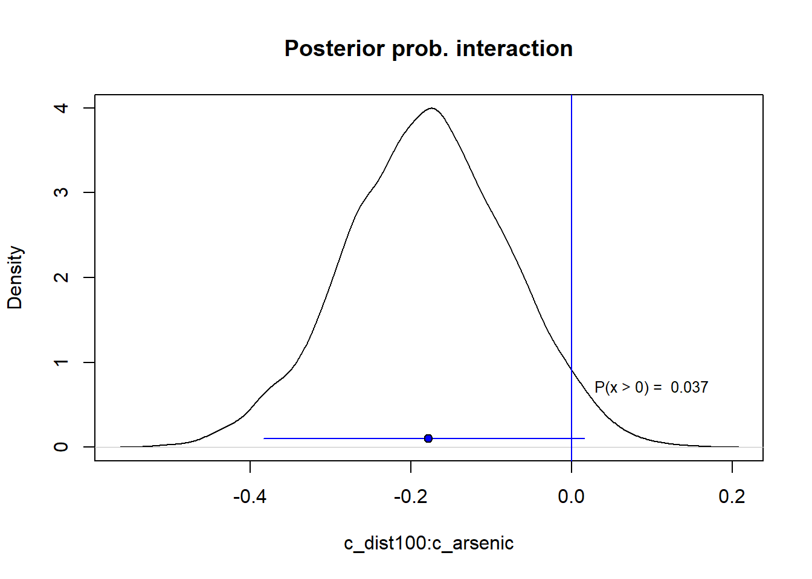
# Posterior interval
posterior_interval(fit_5, prob = 0.95) 2.5% 97.5%
(Intercept) 0.2744100 0.42970803
c_dist100 -1.0821656 -0.67956972
c_arsenic 0.3903326 0.55106241
c_dist100:c_arsenic -0.3837574 0.01596276Add social predictors
Gelman et al’s model, p. 252.
wells$c_educ4 <- wells$educ4 - mean(wells$educ4)
fit_8 <- stan_glm(switch ~ c_dist100 + c_arsenic + c_educ4 +
c_dist100:c_educ4 + c_arsenic:c_educ4,
family = binomial(link="logit"), data = wells, refresh = 0)
print(fit_8)stan_glm
family: binomial [logit]
formula: switch ~ c_dist100 + c_arsenic + c_educ4 + c_dist100:c_educ4 +
c_arsenic:c_educ4
observations: 3020
predictors: 6
------
Median MAD_SD
(Intercept) 0.3 0.0
c_dist100 -0.9 0.1
c_arsenic 0.5 0.0
c_educ4 0.2 0.0
c_dist100:c_educ4 0.3 0.1
c_arsenic:c_educ4 0.1 0.0
------
* For help interpreting the printed output see ?print.stanreg
* For info on the priors used see ?prior_summary.stanregSee Gelman et al. Section 14.5 (pp. 253-256).
# This function is from Gelman et al. It calculates binned residuals.
# Input: x = fitted values (y-hat) or a predictor variable, y = residuals
binned_resids <- function (x, y, nclass=sqrt(length(x))){
breaks.index <- floor(length(x)*(1:(nclass-1))/nclass)
breaks <- c (-Inf, sort(x)[breaks.index], Inf)
output <- NULL
xbreaks <- NULL
x.binned <- as.numeric (cut (x, breaks))
for (i in 1:nclass){
items <- (1:length(x))[x.binned==i]
x.range <- range(x[items])
xbar <- mean(x[items])
ybar <- mean(y[items])
n <- length(items)
sdev <- sd(y[items])
output <- rbind (output, c(xbar, ybar, n, x.range, 2*sdev/sqrt(n)))
}
colnames (output) <- c ("xbar", "ybar", "n", "x.lo", "x.hi", "2se")
return (list (binned=output, xbreaks=xbreaks))
}Plot binned residuals
pred8 <- fitted(fit_8)
br8 <- binned_resids(pred8, wells$switch-pred8, nclass=40)$binned
plot(range(br8[,1]), range(br8[,2],br8[,6],-br8[,6]),
xlab="Estimated Pr (switching)", ylab="Average residual",
type="n", main="Binned residual plot", mgp=c(2,.5,0), ylim = c(-0.2, 0.2))
abline(0,0, col="gray", lwd=.5)
lines(br8[,1], br8[,6], col="gray", lwd=.5)
lines(br8[,1], -br8[,6], col="gray", lwd=.5)
points(br8[,1], br8[,2], pch=20, cex=.5)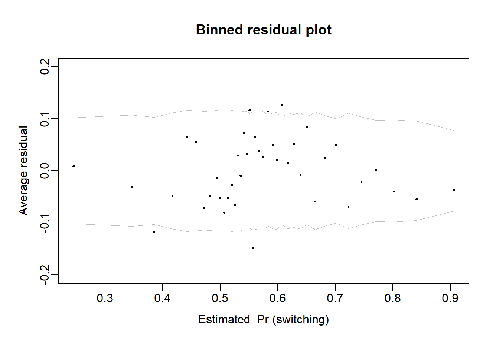
#lines(lowess(pred8, wells$switch-pred8), col = "red", lty = 3)Binned residuals with respect to predictors: Distance (left) and Arsenic level (right)
par(mfrow = c(1, 2))
# Distance
br <- binned_resids(wells$dist, wells$switch-pred8, nclass=40)$binned
plot(range(br[,1]), range(br[,2],br[,6],-br[,6]),
xlab="Distance to nearest safe well", ylab="Average residual",
type="n", main="Binned residual plot", mgp=c(2,.5,0), ylim = c(-0.2, 0.2))
abline(0,0, col="gray", lwd=.5)
n_within_bin <- length(wells$switch)/nrow(br)
lines(br[,1], br[,6], col="gray", lwd=.5)
lines(br[,1], -br[,6], col="gray", lwd=.5)
points(br[,1], br[,2], pch=20, cex=.5)
lines(lowess(wells$dist, wells$switch-pred8), col = "red", lty = 3)
#Arsenic
br <- binned_resids(wells$arsenic, wells$switch-pred8, nclass=40)$binned
plot(range(0,br[,1]), range(br[,2],br[,6],-br[,6]),
xlab="Arsenic level", ylab="Average residual",
type="n", main="Binned residual plot", mgp=c(2,.5,0), ylim = c(-0.2, 0.2))
abline (0,0, col="gray", lwd=.5)
lines (br[,1], br[,6], col="gray", lwd=.5)
lines (br[,1], -br[,6], col="gray", lwd=.5)
points (br[,1], br[,2], pch=20, cex=.5)
lines(lowess(wells$arsenic, wells$switch-pred8), col = "red", lty = 3)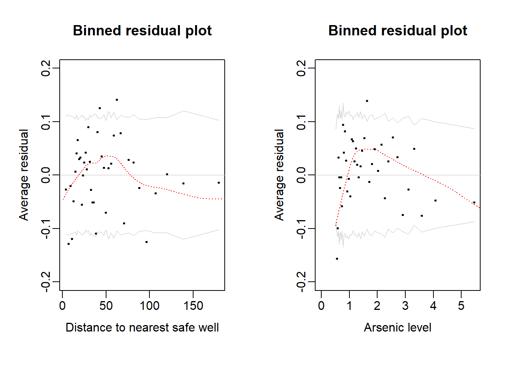
Gelman et al’s final model with log-arsenic, p. 254.
wells$log_arsenic <- log(wells$arsenic)
wells$c_log_arsenic <- wells$log_arsenic - mean(wells$log_arsenic)
fit_9 <- stan_glm(switch ~ c_dist100 + c_log_arsenic + c_educ4 +
c_dist100:c_educ4 + c_log_arsenic:c_educ4,
family = binomial(link="logit"), data = wells, refresh = 0)
print(fit_9, digits = 2)stan_glm
family: binomial [logit]
formula: switch ~ c_dist100 + c_log_arsenic + c_educ4 + c_dist100:c_educ4 +
c_log_arsenic:c_educ4
observations: 3020
predictors: 6
------
Median MAD_SD
(Intercept) 0.34 0.04
c_dist100 -1.01 0.11
c_log_arsenic 0.91 0.07
c_educ4 0.18 0.04
c_dist100:c_educ4 0.35 0.11
c_log_arsenic:c_educ4 0.06 0.07
------
* For help interpreting the printed output see ?print.stanreg
* For info on the priors used see ?prior_summary.stanregPlot the model to understand the distance:education interaction, left on the log-odds scale, right on the probability scale.
par(mfrow = c(1, 2))
## Plot, with outcome on log-odds scale ----
plot(NULL, pch = 16, col = rgb(0, 0, 1, 0.1),
xlab = "Mean-centered dist100",
ylab = "log-odds (Pr(switching | distance))",
xlim = c(-1, 3.5), ylim = c(-6, 6))
# Model predictions, in data-frame called xx
cf <- coef(fit_9)
x <- seq(from = -0.5, to = 3, by = 0.1)
edu <- quantile(wells$c_educ4, c(0.05, 0.5, 0.95))
xx <- expand.grid(c_dist100 = x, c_educ4 = edu)
xx$dxe <- xx$c_dist100*xx$c_educ4
# At arsenic = 0, so cf[3] and cf[5] are gone
xx$ypred <- cf[1] + cf[2]*xx$c_dist100 + cf[4]*xx$c_educ4 + cf[5]*xx$dxe
head(xx) c_dist100 c_educ4 dxe ypred
1 -0.5 -1.207119 0.6035596 0.8293254
2 -0.4 -1.207119 0.4828477 0.6869369
3 -0.3 -1.207119 0.3621358 0.5445483
4 -0.2 -1.207119 0.2414238 0.4021598
5 -0.1 -1.207119 0.1207119 0.2597712
6 0.0 -1.207119 0.0000000 0.1173826# Add lines for model prediction with three levels of education (5, 50, 95th)
lines(xx$c_dist100[xx$c_educ4 == edu[1]], xx$ypred[xx$c_educ4 == edu[1]], lty = 1)
lines(xx$c_dist100[xx$c_educ4 == edu[2]], xx$ypred[xx$c_educ4 == edu[2]], lty = 2)
lines(xx$c_dist100[xx$c_educ4 == edu[3]], xx$ypred[xx$c_educ4 == edu[3]], lty = 3)
# Add text to plot
#text(x = -1, y = 0, labels = paste("As:", round(arsenic[1], 2)), pos = 4, cex = 0.8)
#text(x = -1, y = 0.7, labels = paste("As:", round(arsenic[2], 2)), pos = 4, cex = 0.8)
#text(x = -1, y = 2.2, labels = paste("As:", round(arsenic[3], 2)), pos = 4, cex = 0.8)
## Plot data, probability scale see Fig. 13.10 (left) in Gelman et al. ----
plot(NULL, pch = 16, col = rgb(0, 0, 1, 0.1),
xlab = "Mean-centered dist100",
ylab = "Pr(switching | distance)",
xlim = c(-1, 3.5), ylim = c(0, 1))
# Model predictions, in data-frame called xx
cf <- coef(fit_9)
x <- seq(from = -0.5, to = 3, by = 0.1)
edu <- quantile(wells$c_educ4, c(0.05, 0.5, 0.95))
xx <- expand.grid(c_dist100 = x, c_educ4 = edu)
xx$dxe <- xx$c_dist100*xx$c_educ4
# At arsenic = 0, so cf[3] and cf[5] are gone
xx$ypred <- plogis(cf[1] + cf[2]*xx$c_dist100 + cf[4]*xx$c_educ4 + cf[5]*xx$dxe)
head(xx) c_dist100 c_educ4 dxe ypred
1 -0.5 -1.207119 0.6035596 0.6962123
2 -0.4 -1.207119 0.4828477 0.6652852
3 -0.3 -1.207119 0.3621358 0.6328698
4 -0.2 -1.207119 0.2414238 0.5992065
5 -0.1 -1.207119 0.1207119 0.5645800
6 0.0 -1.207119 0.0000000 0.5293120# Add lines for model prediction with three levels of education (5, 50, 95th)
lines(xx$c_dist100[xx$c_educ4 == edu[1]], xx$ypred[xx$c_educ4 == edu[1]], lty = 1)
lines(xx$c_dist100[xx$c_educ4 == edu[2]], xx$ypred[xx$c_educ4 == edu[2]], lty = 2)
lines(xx$c_dist100[xx$c_educ4 == edu[3]], xx$ypred[xx$c_educ4 == edu[3]], lty = 3)
# Add text to plot
me <- mean(wells$educ)
text(x = 1, y = 0.02, labels = paste("Edu:", round(edu[1] + me, 1), "y"), pos = 4, cex = 0.8)
text(x = 1, y = 0.4, labels = paste("Edu:", round(edu[2] + me, 1), "y"), pos = 4, cex = 0.8)
text(x = 1, y = 0.6, labels = paste("Edu:", round(edu[3] + me, 1), "y"), pos = 4, cex = 0.8)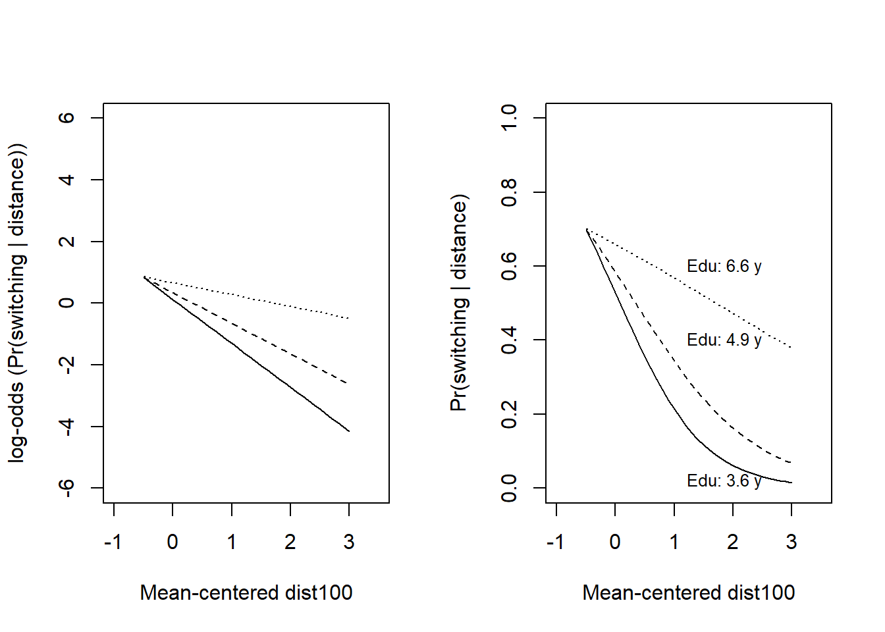
s9 <- data.frame(fit_9)
plot(density(s9$c_dist100.c_educ4), main = "DistxEdu interaction",
xlab = "c_dist100:c_educ4")
abline(v = 0, col = "blue")
lines(quantile(s9$c_dist100.c_educ4, prob = c(0.025, 0.975)), c(0.1, 0.1), col = "blue")
points(median(s9$c_dist100.c_educ4), 0.1, pch = 21, bg = "blue")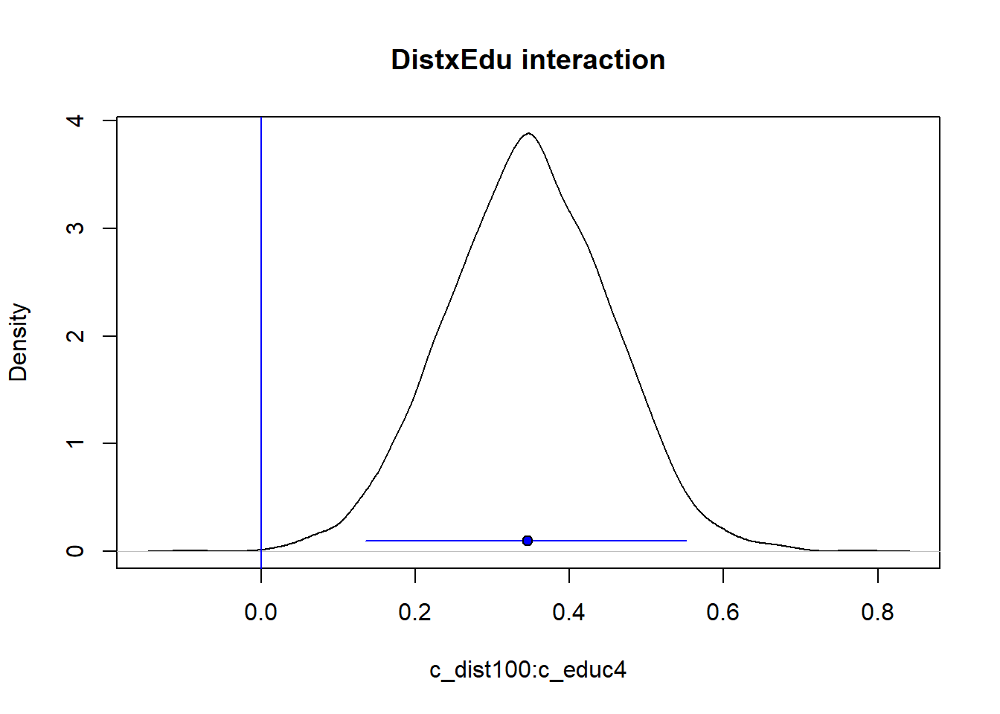
The practice problems are labeled Easy (E), Medium (M), and Hard (H), (as in McElreath (2020)).
16E1.
When is it safe to interpret the odds ratio (OR) as a relative risk (RR).
Is it always the case that OR > RR?
16E2.
Which of the following statements about logistic regression are true?
Select one or more alternatives:
Assume that residuals are normally distributed
Estimates probabilities
Has higher power than linear regression
Can only be used with multiple predictors
Is defined for outcomes in the interval [-1, 1]
Involve a logit link function
Used to model binary outcomes
Can be used to fit an intercept only model to estimate a single proportion
The exponentiated intercept, \(exp(b_0)\) can be interpreted as an odds ratio
Regression coefficients (“slopes”) divided by 4, \(b_1/4\), can be interpreted as an upper limit to the probability difference associated with a one-unit difference in the predictor
16M1. Make sense of this: “In logistic regression variables are interacting with them selves: The effect of a variable X on the probability of outcome depends on the level of X!”
16M2. Figure below is from the Bangladesh well-switching data discussed above.
Estimate by eye the predicted difference in probability of switching wells between people living 200 m compared to 0 m (next to) the nearest safe well.
Estimate by eye the odds ratio for the same comparison, between people living 200 compared to 0 m from the nearest well.
# function to jitter data points
jitter_binary <- function(a, jitt = 0.05){
ifelse(a == 0, runif(length(a), 0, jitt), runif(length(a), 1- jitt, 1))
}
wells$switch_jitter <- jitter_binary(wells$switch)
# Plot jittered data
plot(wells$dist100, wells$switch_jitter, pch = 16, col = rgb(0, 0, 1, 0.1),
xlab = "Distance (in 100-m) to nearest safe well",
ylab = "Pr(switching | distance)")
cf <- coef(fit_1)
x <- seq(from = 0, to = 4, by = 0.1)
ypred <- plogis(cf[1] + cf[2]*x)
lines(x, ypred)
# Grid lines
for (j in seq(0, 3.5, 0.25)) { lines(c(j, j), c(0, 1), lty =2, col = "grey")}
for (j in seq(0, 1.0, 0.1)) { lines(c(0, 3.5), c(j, j), lty =2, col = "grey")}16M3. Below regression estimate for the model displayed in 16M2. Use the coefficients to calculate answers to 16M2
print(fit_1, digits = 2)stan_glm
family: binomial [logit]
formula: switch ~ dist100
observations: 3020
predictors: 2
------
Median MAD_SD
(Intercept) 0.61 0.06
dist100 -0.62 0.09
------
* For help interpreting the printed output see ?print.stanreg
* For info on the priors used see ?prior_summary.stanreg16H1. Revisit the well-switching data discussed above. Fit a model predicting well-switching from distance and arsenic-level as well as their interaction. Visualize and interpret the result.
sessionInfo()R version 4.4.2 (2024-10-31 ucrt)
Platform: x86_64-w64-mingw32/x64
Running under: Windows 11 x64 (build 26100)
Matrix products: default
locale:
[1] LC_COLLATE=Swedish_Sweden.utf8 LC_CTYPE=Swedish_Sweden.utf8
[3] LC_MONETARY=Swedish_Sweden.utf8 LC_NUMERIC=C
[5] LC_TIME=Swedish_Sweden.utf8
time zone: Europe/Stockholm
tzcode source: internal
attached base packages:
[1] stats graphics grDevices utils datasets methods base
other attached packages:
[1] rstanarm_2.32.1 Rcpp_1.0.14
loaded via a namespace (and not attached):
[1] tidyselect_1.2.1 dplyr_1.1.4 farver_2.1.2
[4] loo_2.8.0 fastmap_1.2.0 tensorA_0.36.2.1
[7] shinystan_2.6.0 promises_1.3.3 shinyjs_2.1.0
[10] digest_0.6.37 mime_0.13 lifecycle_1.0.4
[13] StanHeaders_2.32.10 survival_3.7-0 magrittr_2.0.3
[16] posterior_1.6.1 compiler_4.4.2 rlang_1.1.6
[19] tools_4.4.2 igraph_2.1.4 yaml_2.3.10
[22] knitr_1.50 htmlwidgets_1.6.4 pkgbuild_1.4.8
[25] curl_6.4.0 plyr_1.8.9 RColorBrewer_1.1-3
[28] dygraphs_1.1.1.6 abind_1.4-8 miniUI_0.1.2
[31] grid_4.4.2 stats4_4.4.2 xts_0.14.1
[34] xtable_1.8-4 inline_0.3.21 ggplot2_3.5.2
[37] scales_1.4.0 gtools_3.9.5 MASS_7.3-61
[40] cli_3.6.5 rmarkdown_2.29 reformulas_0.4.1
[43] generics_0.1.4 RcppParallel_5.1.10 rstudioapi_0.17.1
[46] reshape2_1.4.4 minqa_1.2.8 rstan_2.32.7
[49] stringr_1.5.1 shinythemes_1.2.0 splines_4.4.2
[52] bayesplot_1.13.0 parallel_4.4.2 matrixStats_1.5.0
[55] base64enc_0.1-3 vctrs_0.6.5 V8_6.0.4
[58] boot_1.3-31 Matrix_1.7-1 jsonlite_2.0.0
[61] crosstalk_1.2.1 glue_1.8.0 nloptr_2.2.1
[64] codetools_0.2-20 distributional_0.5.0 DT_0.33
[67] stringi_1.8.7 gtable_0.3.6 later_1.4.2
[70] QuickJSR_1.8.0 lme4_1.1-37 tibble_3.3.0
[73] colourpicker_1.3.0 pillar_1.10.2 htmltools_0.5.8.1
[76] R6_2.6.1 Rdpack_2.6.4 evaluate_1.0.3
[79] shiny_1.11.1 lattice_0.22-6 markdown_2.0
[82] rbibutils_2.3 backports_1.5.0 threejs_0.3.4
[85] httpuv_1.6.16 rstantools_2.4.0 gridExtra_2.3
[88] nlme_3.1-166 checkmate_2.3.2 xfun_0.52
[91] zoo_1.8-14 pkgconfig_2.0.3